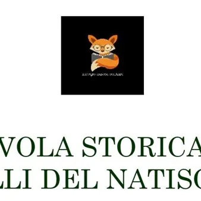

sab 24 ott · dalle 19:00
La tavola storica delle Valli del Natisone
Sabato 24 Ottobre 2026 alle ore 19:00 a Drenchia, Renato Grando, docente Slow Food e storico della Gastronomia, ci condurrà, presso il rifugio Casoni Solarie, in una narrazione legata alla storia dei prodotti tipici di montagna e delle valli del Natisone, tra Friuli Venezia…
 Indicazioni
Indicazioni
- Costi e prenotazioni
- Costo non indicato · Prenotazione non indicata
- Programma
- Programma da verificare. Apri la fonte ufficiale per orari e possibili aggiornamenti.
- In caso di maltempo
- Nessuna indicazione specifica pubblicata.
- Note
- Acquisito automaticamente dalla fonte.
L’EVENTO
Descrizione completa
Sabato 24 Ottobre 2026 alle ore 19:00 a Drenchia, Renato Grando , docente Slow Food e storico della Gastronomia, ci condurrà, presso il rifugio Casoni Solarie, in una narrazione legata alla storia dei prodotti tipici di montagna e delle valli del Natisone, tra Friuli Venezia Giulia e Slovenia.
Lungo il transnazionale “Sentiero della Pace” si trova questo isolato quanto tranquillo rifugio, parte del piccolo abitato di Drenchia, posto al confine con la Slovenia.
Qui i padroni di casa ci accoglieranno per ascoltare alcuni passaggi storici e degustare insieme piatti e vini della tradizione, coniugando gli echi della Grande Guerra di oltre un secolo fa con la volontà e il piacere di convivenza e comunanza delle popolazioni di oggi. Seguirà un incontro conviviale con il docente Renato Grando. Di seguito si illiustra il menù proposto:
- Formaggi di malga e salumi tipici della tradizione locale
- Assaggio di miele di millefiori di Alessia Candussio “La Dama del miele”
- Gnocchi fatti in casa con le susine
- Zuppa di castagne varietà “Canalutta”
- Lonza di cervo al forno con le castagne “Canalutta” e funghi di bosco con la polenta bramata molino “Dorbolò”
- Stakanje delle Valli del Natisone
- Gubana “Qualizza” di Nicola Puppin e schnitte della tradizione
- Pane con patate del panificio “Eltona” di Tolmin
- Šljivovica Slivovka distillato di prugne dalla Croazia
- Caffè Torrefazione ORO di Tavagnacco I vini dell’Azienda Agricola Guerra Albano di Torreano:
- Friulano DOC Friuli Colli Orientali 2025
- Merlot DOC Friuli Colli Orientali 2024
- Pignolo DOC Friuli Colli Orientali Riserva 2020 “Matteo I”
- Ribolla Gialla spumante Metodo Classico Brut “Giuliet” 2022 Per info e prenotazioni , contattare il Rifugio Casoni Solarie al numero +39 375 607 7240 oppure all'email rifugiosolarie@hotmail.com Posti limitati, prenotazione obbligatoria
IL PROGRAMMA
Programma e orari
Appuntamenti raccolti dalle fonti elencate. Dove manca un orario, non è ancora disponibile in questa scheda.
Programma pubblicato
- ore 19:00
INFORMAZIONI UTILI
Prima di partire
- Controllare la fonte prima di partire.
ORGANIZZAZIONE